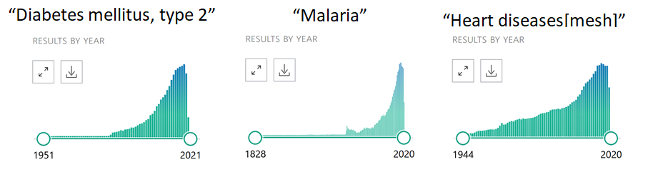
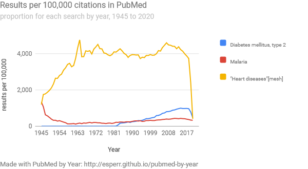

The biomedical literature is a not only a tool for finding the newest answers, but is also a record of what researchers and clinicians have concerned themselves with over the decades. PubMed now generates a graph showing reults by year for a search, but this may not show actual trends given that the astonishing increase of the biomedical literature over time makes a simple count less illustrative of changes for any given search.
For exmaple, here are graphs of raw counts for the searches 'Diabetes mellitus, type 2', 'Malaria' and '“Heart diseases[mesh]”': 
All three show a steep increase, but it is hard to discern what this means given the background increase in items. However, if we compare those yearly totals to those for PubMed as a whole and lay them out on the same graph, a clearer picture of publication trends emerges:
PubMed does a thorough job of covering the vast biomedical literature, as it contains citations from around 26,000 journals published around the world. Within PubMed, the MEDLINE database provides thorough coverage of this literature from 1966 onwards and OLDMEDLINE take us back to 1946 for some parts of the literature. There are also a relative smattering of PubMed Central citations between the nineteenth century and the present.
Yearly counts for each search are taken from PubMed and compared to year-by-year totals. Hits per 100,000 by year are calculated by the following formula:
\[ {\text{Number of search results that year} \over \text{Total number of PubMed results that year} } \times 100000.\]
When you enter a search into the search bar, you are searching PubMed directly, meaning that your search is parsed by NCBI's automatic term mapping algorithm. If something doesn't make sense, you can try your search in a new PubMed window (or click any year on the graph) and examine the "Details" from the Advanced Search Builder page.
Use caution when interpreting the results of a Medical Subject Heading search, as older records are not typically re-indexed after a new heading is added to the thesaurus.
PubMed by Year is a project by Ed Sperr, M.L.I.S.
Ed can be reached at ed_sperr@hotmail.com or esperr@uga.edu.
PubMed by Year is lashed together with bailing wire and jQuery. NCBI does not have an easy way to grab by-year counts for a search (short of launching 50+ calls to the API), so a custom webservice is used to fetch them. Google Charts is used to draw the charts and responsive layout is made easier with Bootstrap.
You can find the source code for this application at GitHub.
Please note that the information provided here comes ultimately from the National Center for Biotechnology Information and is subject to the terms listed under their Disclaimer and Copyright notice.
Feel free to use this tool as you wish, but if you use PubMed by Year for publication, I'd appreciate a citation:
Sperr E. PubMed by Year [Internet]. 2016 [cited your_date_here]. Available from http://esperr.github.io/pubmed-by-year/
Want to have even more fun with tools like this? Check out Visualizing PubMed.